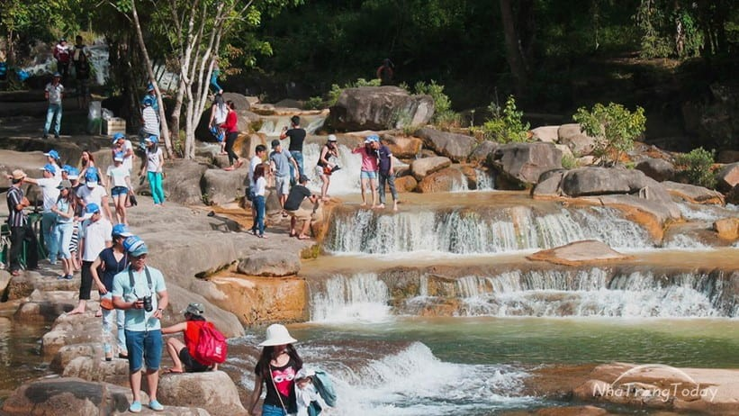
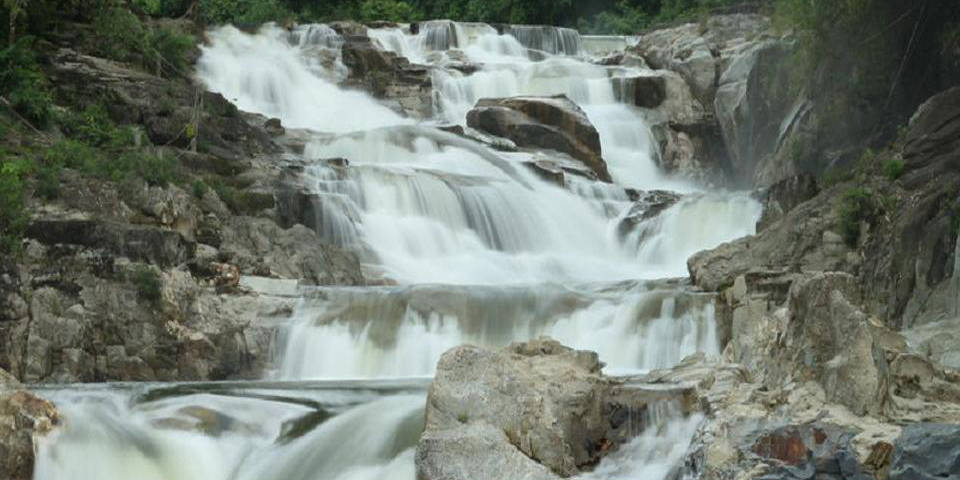
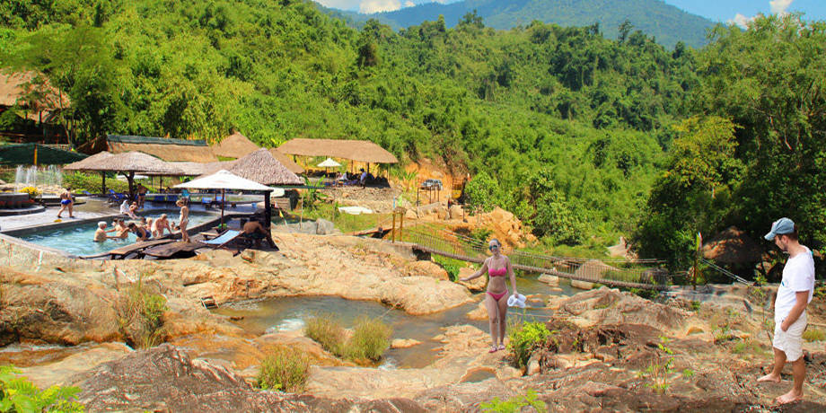

Thác Yang Bay Nha Trang.
Thác Yang bay nằm ở đâu?
Cách TP. Nha Trang khoảng 45km, Yang Bay tọa lạc giữa một thung lũng trải rộng với diện tích 570ha ở độ cao 100m so với mực nước biển, thuộc địa bàn huyện Khánh Vĩnh. Nơi đây vốn là rừng nguyên sinh với khí hậu trong lành, mát mẻ. Yang Bay hấp dẫn du khách bởi vẻ hoang sơ của vùng rừng núi bạt ngàn cỏ, cây và thác nước, không khí thoáng đãng. Theo cách gọi của người Raglai, Yang Bay có nghĩa là “thác trời”. Tại đây, hình thành 3 khu thác: Yang Bay, Yang Khang và Hocho. Yang Bay là thác chính, cao 80m, dài 2.000m, trong đó, Yang Bay 1 cao 20m, dài 200m với 2 hồ nhỏ và 1 hồ lớn; tiếp đến là thác Yang Bay 2. Bên cạnh đó, còn có hang Chiến Khu H1, H2, thác Hocho 1, 2, bãi đá cây đa và 2 thác nhỏ khác là Yang Khang và Hocho với dòng nước mát lạnh đổ xuống những lớp đá tung bọt trắng xóa như mây, tạo nên phong cảnh tuyệt đẹp và hữu tình. Đặc biệt, tại thác Hocho, du khách còn được thưởng thức và khám phá mạch nước khoáng nóng tự nhiên mà khi ngâm mình xuống sẽ cảm nhận hai luồng nước nóng, lạnh chảy song hành. Từ năm 2003, Yang Bay được chuyển giao cho Tổng Công ty Khánh Việt (Khatoco) quản lý và khai thác . Khi mới được tiếp nhận, Yang Bay chỉ là khu rừng - thác hoang sơ, cơ sở hạ tầng chưa phát triển, việc đi lại rất khó khăn. Tận dụng cảnh quan thiên nhiên trời ban, Khatoco đã bắt tay xây dựng, phát triển Yang Bay, đồng thời mời các chuyên gia địa chất, kiến trúc trong và ngoài nước đến khảo sát, từ đó xây dựng mô hình phát triển du lịch phù hợp nhưng vẫn đảm bảo cảnh quan môi trường tự nhiên. Yang Bay bắt đầu chuyển mình, phát triển thành Công viên du lịch Yang Bay. Từ vùng đất hoang sơ, giờ đây, Yang Bay đã trở thành khu du lịch sinh thái với nhiều loại hình sản phẩm du lịch độc đáo. Những năm qua, Yang Bay đã được đầu tư hàng chục tỷ đồng để cải tạo, nâng cấp cơ sở hạ tầng, trang thiết bị, phát triển nhiều loại hình sản phẩm mới phục vụ du lịch. Cửa hàng mua sắm, trưng bày sản phẩm lưu niệm, trang sức, vật dụng… thỏa sức cho du khách lựa chọn. Yang bay Nha Trang với nhiều trò chơi vui nhộn Đến khu vui chơi, giải trí, du khách có thể thỏa thích với nhiều trò chơi mới lạ, độc đáo, vui nhất là trò đua heo. Những chú heo được huấn luyện và trở thành “vận động viên” bốn chân chạy và nhảy qua vật cản trông rất lạ mắt. Trò bắn nỏ và ném lao lại đòi hỏi sự tỉ mỉ, kiên trì và cả sức mạnh khiến người chơi có được những trải nghiệm thú vị. Đặc biệt, lần đầu tiên tại Yang Bay xuất hiện trò câu cá sấu - một trò chơi mang đến cảm giác mạnh. Thật không gì hồi hộp khi thả mồi câu loài thú mõm dài, hung tợn, di chuyển và đớp mồi rất nhanh này. Chia tay với những trò chơi sôi động và hấp dẫn, du khách lại được đến tham quan vườn lan với hàng chục ngàn cây đua nhau khoe sắc tỏa hương, hay thăm khu nuôi gấu hoang dã và khu nuôi cá sấu nước ngọt công nghệ mới… Du khách cũng có thể chìm đắm cùng những bản nhạc rất đặc biệt phát ra từ đàn đá hoặc đến tìm hiểu và thưởng thức âm nhạc truyền thống tại khu trưng bày nhạc cụ dân tộc với hàng trăm nhạc cụ truyền thống như: Đàn T'rưng, đàn đá, cồng, chiêng, tù và… Ngoài ra, du khách còn được thưởng thức những bản nhạc truyền thống đặc trưng của đồng bào Raglai không kém phần đặc sắc, vui nhộn và rộn ràng, được các nghệ nhân Raglai trực tiếp thể hiện. Thưởng thức ẩm thực rừng phong phú Sau khi thỏa thích vui chơi, giải trí và mua sắm, du khách sẽ thưởng thức ẩm thực tại Nhà hàng Yang Bay, với các món ăn đặc trưng mới lạ và hấp dẫn được chế biến từ thịt cá sấu và đà điểu, qua bàn tay tài hoa của các đầu bếp như: cá sấu trui thơm, nhồi củ sen, bóp thấu chuối rừng, tiềm sâm bổ lượng, tay cầm măng đắng, xốt Thái…; đà điểu tiềm hồ ngũ quả, đùm lá sen non, đà điểu pháo, trứng đà điểu chiên… Hàng năm, Yang Bay đón hàng chục ngàn lượt du khách đến tham quan. Hiện nay, Yang Bay là một trong những địa danh du lịch nổi tiếng của Khánh Hòa, có tên trên “bản đồ du lịch” Việt Nam. Thời gian tới, Yang Bay tiếp tục được đầu tư xây dựng khu tắm khoáng, bùn và khu nghỉ dưỡng cao cấp với nhiều sản phẩm du lịch mới lạ, độc đáo..
 